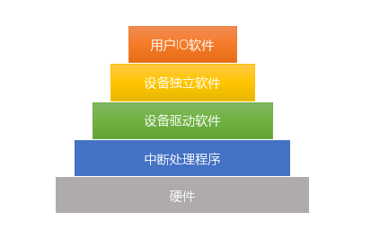

- IO控制器作用
- . 接收并识别CPU命令
- . 向CPU报告设备状态
- . 数据交换
- . 地址识别
-
 IO管理软件
控制方式
- 程序直接控制方式
- . 程序直接对设备循环测试
- . CPU频繁参与|轮询
- IO设备←→CPU←→内存
- . 每次读写一个字
- . 读写的数据需要经过数据寄存器中转
- 中断驱动方式
- . 引入中断机制
- . CPU将IO进程阻塞；去干别的事
- . IO完成读写后，通知CPU回来
- . IO前后CPU才干预
- IO设备←→CPU←→内存
- . 每次读写一个字
- . 读写的数据需要经过数据寄存器中转
- DMA方式
- . 基本单位是数据块，不是字
- . IO设备和内存之间开启的数据交换通路 | 数据从设备直接送入内存或相反
- IO设备←→内存
- . 数据的传送受DMA控制，不需要CPU参与，其它操作仍然需要CPU
- 通道控制方式
- . 引入通道-专门负责IO的处理机
- . 每次处理一组数据块
- IO设备←→内存
-
采用中断方式和 DMA 方式控制技术时， CPU 与外设可并行工作